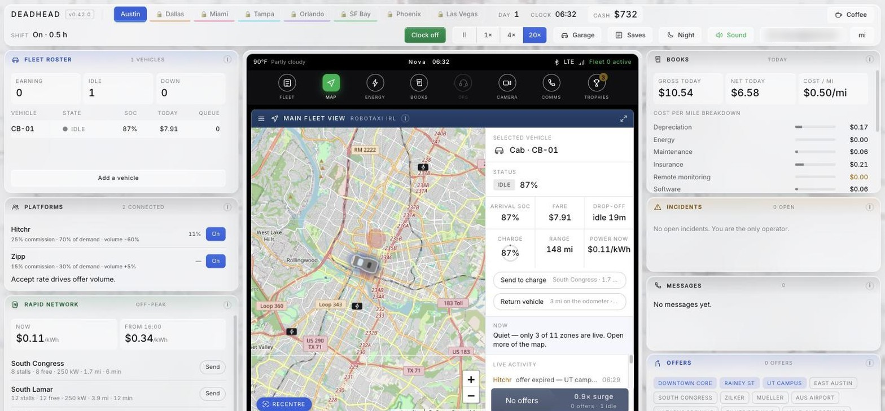
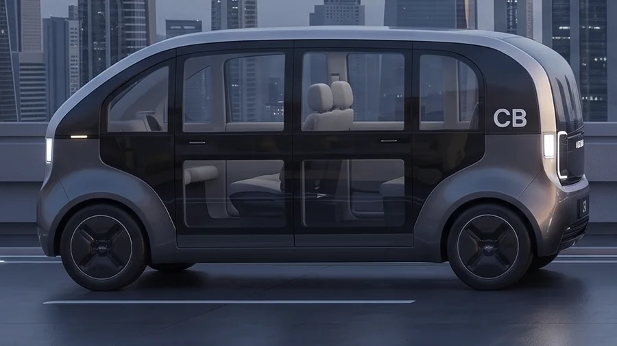
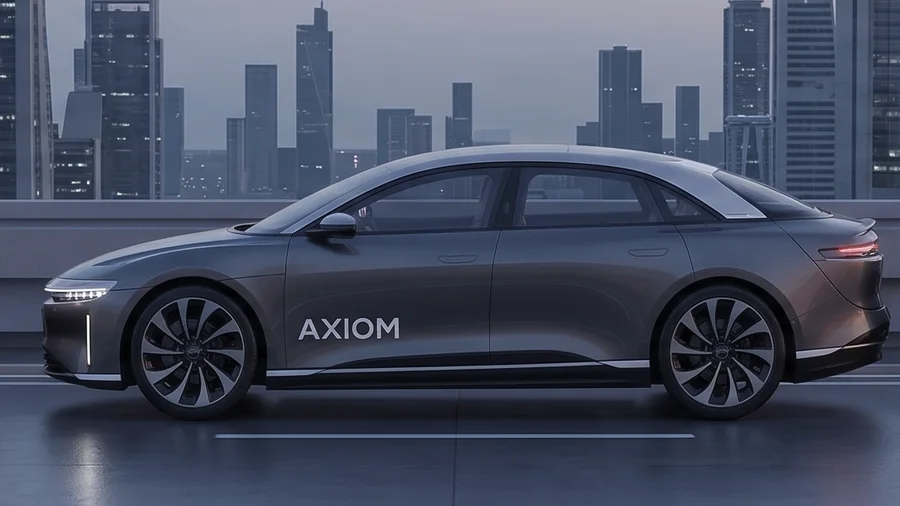
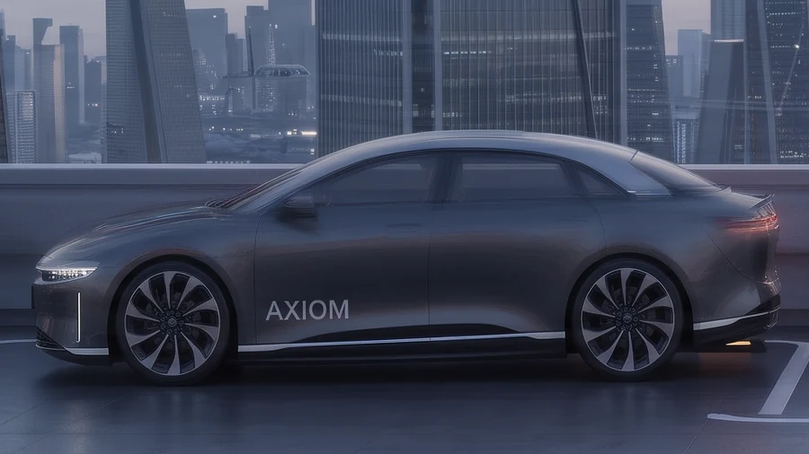
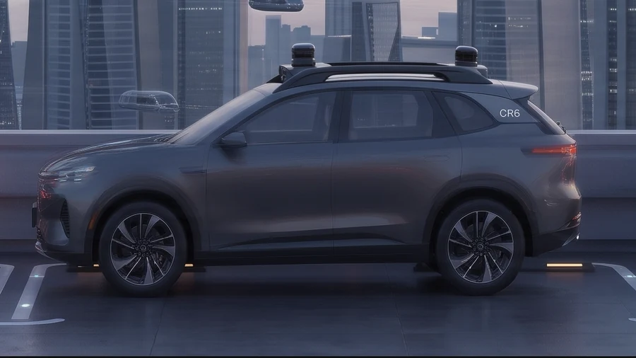
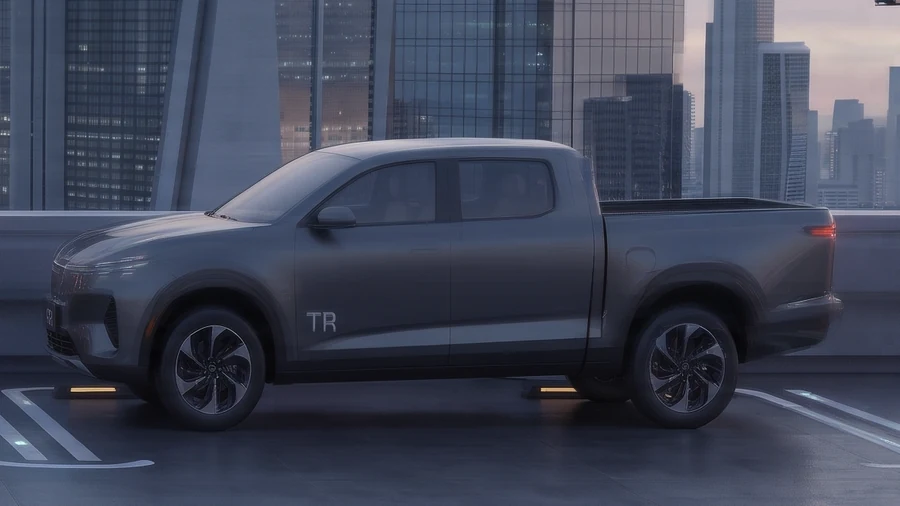
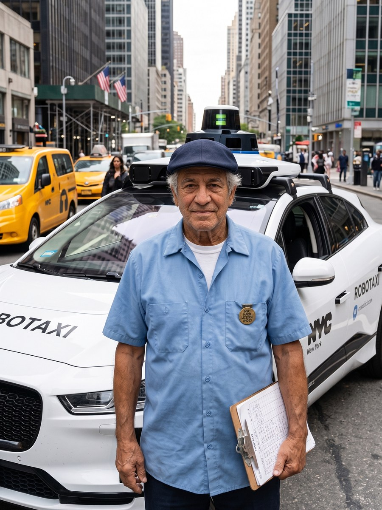

A robotaxi fleet simulator played entirely through the car's own centre console. You're not the driver — you're the person the driver got replaced by, and the job turns out to be harder.

The twelve markers on the console at the top of the page, in order. Hover any card and it lights up the marker it belongs to.
Austin is the tutorial. Each next city unlocks when you clock off a full shift in the one before. Phoenix and Las Vegas are dashed out — Nobody has launched there, so neither has the game.
Not a per-city balance. A car you left parked in Miami is still billing this number at midnight while you work Tampa.
Cars only earn while you're watching them — you're the remote operator. 1×, 4× or 20×, except in San Francisco, where you're physically in the seat and it's locked at 1×.
Every car: what it's doing, its charge, what it has earned today, and how many rides are stacked behind the current one.
Hitchr takes 25% and carries 70% of demand. Zipp takes 15% and carries 30%. Your acceptance rate drives how much either sends you.
$0.19/kWh at 08:00, $0.34 from 16:00 — Austin Energy's real time-of-use pricing. Every city runs its own utility's published rates.
Actual locations with their real stall counts, peak kW and distance. Research Blvd never queues at 18 stalls — and charges at only 72 kW, 32 minutes away.
Cars follow actual road geometry inside Austin's published service area. Where the real map excludes somewhere, so does this one.
Charge, range, what power costs right now, and what it would take to send it to a charger. Also what it's worth if you sell it, and what you'd still owe.
One button takes the strongest job on the board. The multiplier next to it is live demand — 1.8× here, because it's the morning rush.
Gross, net and cost per mile, split live into depreciation, energy, maintenance, insurance and software. This is the panel that stops flattering you first.
$51.41 on the meter, $38.56 after commission, and 5.6 miles driven empty to reach the passenger. Only the third one decides whether you made money.
You've just toured the console top to bottom. Select your Robotaxi car and play — the real one works exactly like this.
▶ Select your Robotaxi and playRecorded on an earlier build, and left alone on purpose. Panels have moved since — the console was reorganised twice, the city strip became a dropdown, three more cities shipped and every car got a real photo — but the shift itself plays out exactly like this, and re-recording two minutes of honest play is harder than admitting the date.
Axiom does not exist. The spec ladder does — real pack sizes, real range, real cost per mile, from a 48 kWh four-seat cab to a 123 kWh light truck. None of it is flavour text: each figure feeds a system that is already running.

CBNo wheel, no pedals, cheapest to own — and on a charger constantly. Four seats means you never take a full group.

SLThe entry trim: cheap to hold, short on legs. Rentable solo on day one, same as most of this lineup — only the Truck needs more than an $800 start.
More pack, more frontal area — the same distance for more money. Needs $502 to rent — comfortably inside an $800 start.

SLLThe longest range in the catalogue. It sits on a charger less than anything else here.

CR6The biggest pack short of the Truck, spent carrying a third row nobody has booked yet.

TRWorst cost per mile by a wide margin, 38 minutes to fill, and $152 owed every midnight before it moves.
All of it happens on one screen: the car's own centre console.
Cars only earn while you're watching them. Clock off and they park — and still owe their fixed cost at midnight.
The meter, what you keep after commission, and the empty miles to the pickup. Two platforms, 25% and 15%, competing for the same demand.
Send a car to a real charging site with real stall counts and peak kW. A 72 kW site charges slowly because it genuinely does.
Switch zones on and off one at a time. Every city has its own demand curve by hour, and no two read the same way.
When a car gets wedged the console cuts to its camera feed and you drive it out yourself. Optional — the incident clears eventually. Whether that's soon enough is your problem.
Cost per mile broken out live into depreciation, energy, maintenance, insurance and software. Twenty-one trophies, and a leaderboard if you want one.
Everything around the hardware — Hitchr, Zipp, Meridian, Halo — is invented. The cars and the numbers are not. That line is deliberate.

Forty-one years in a cab before he got out, while getting out was still his idea. He walks you through your first day, then goes quiet — and speaks again only once you've been stuck long enough to need it. He isn't a tooltip. He has opinions about what you're doing, and he's usually right.
A standing Now line always names the single most useful next thing, so you're never lost. It never tells you what to choose.
Paolo's Now line is already waiting on your first shift.
▶ Meet Paolo in-gameLocal saves by default, or sign in for cloud saves synced across devices. Passwords are never transmitted — key derivation runs in your browser.
Both themes, and the layout genuinely reworks itself between a phone, a laptop and an ultrawide.
No ads, nothing behind a paywall, no second version that costs money. If it turned out to be worth something to you there's a tip jar — and if it didn't, that's completely fine.